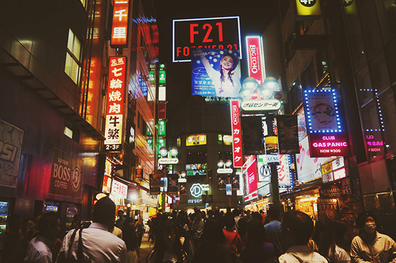
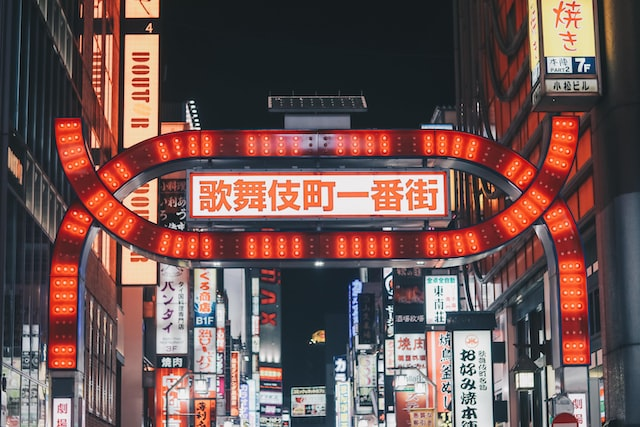

Shinjuku is a special ward in Tokyo, Japan. It is a major commercial and administrative centre, housing the northern half of the busiest railway station in the world (Shinjuku Station) and the Tokyo Metropolitan Government Building, the administration centre for the government of Tokyo. As of 2018, the ward has an estimated population of 346,235, and a population density of 18,232 people per km2. The total area is 18.23 km2.[4] Since the end of the Second World War, Shinjuku has been a major secondary center of Tokyo (fukutoshin), rivaling to the original city center in Marunouchi and Ginza. It literally means "New Inn Ward". Shinjuku is also commonly used to refer to the entire area surrounding Shinjuku Station. The southern half of this area and of the station in fact belong to Yoyogi and Sendagaya districts of the neighboring Shibuya ward.
Shinjuku is a city-within-the-city that never sleeps. Just a few stations away from Shibuya, boredom is not a possibility in this frenetic section of Tokyo.
The nightlife here runs the gamut, from rowdy izakayas and beer bars, to red-light entertainment and the infamous (and now-defunct) Robot Restaurant, as well as Tokyo’s small but lively gay district (2-chome, Ni-Chome).
The Kabukicho section of Shinjuku is Tokyo’s most well known red-light district. Despite the area’s shady reputation, it can be an interesting and rewarding district to explore, and amongst the madness you can find great little bars and restaurants, as well as local music venues and more.
